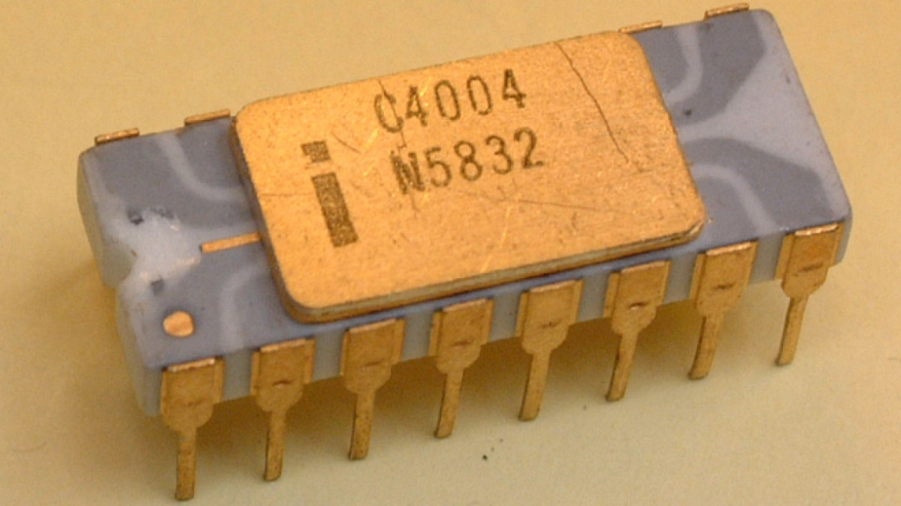
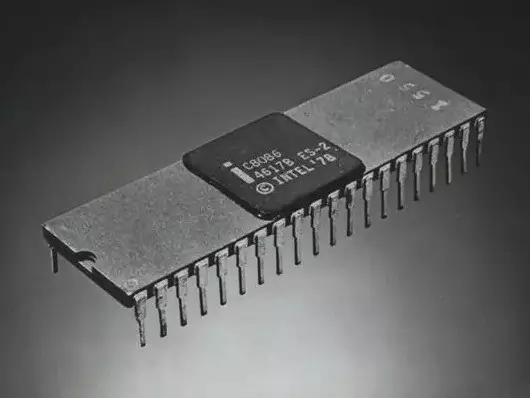
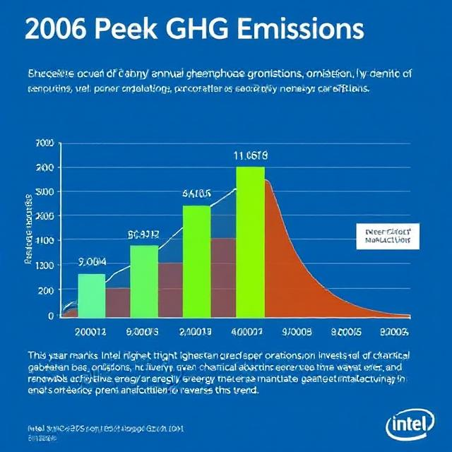
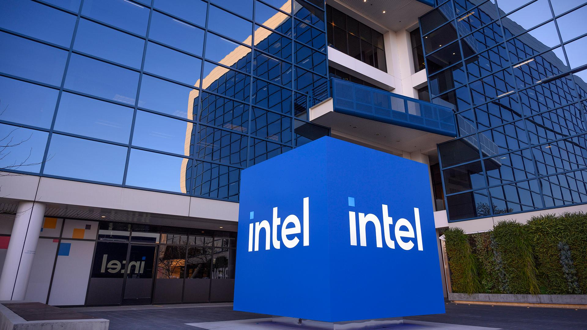
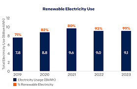

١٩٦٨
تأسيس إنتل

روبرت نويس وغوردون مور يعيدان تسمية الشركة الجديدة من NM Electronics إلى Intel Corporation، ويضعان الأساس لعقود من الابتكار التكنولوجي.
١٩٧١
أول معالج دقيق
إنتل تطلق 4004، أول معالج دقيق تجاري في العالم، مما أشعل ثورة المعالجات الدقيقة ودفع مستقبل أجهزة الحوسبة.
١٩٧٨
معالج 8086
إطلاق معالج 8086، الذي أسس معمارية x86 التي تدعم العديد من الحواسيب والخوادم الحديثة.
١٩٨٥
معالج 386

إنتل تقدم معالج 386 بمعمارية 32-بت، مما أتاح أداءً وتعدد مهام متقدم للحواسيب الشخصية.
٢٠٠٦
ذروة الانبعاثات
شهد هذا العام أعلى انبعاثات سنوية للغازات الدفيئة من عمليات إنتل. استثمرت الشركة لاحقًا في الطاقة المتجددة وكفاءة التصنيع لعكس هذا الاتجاه.
٢٠٢٠
استراتيجية RISE

أطلقت إنتل استراتيجية RISE وأهداف 2030 لدفع التقدم في العمل المناخي وإدارة المياه وتقليل النفايات.
٢٠٢٢
صافي صفر انبعاثات
أعلنت إنتل التزامها بتحقيق صافي انبعاثات صفرية (النطاق 1 و2) في عملياتها العالمية بحلول عام 2040.
٢٠٢٣
الكهرباء المتجددة
حققت الشركة استخدام 99% من الكهرباء المتجددة عالميًا، مما ساهم في خفض الانبعاثات الكربونية بشكل كبير.
٢٠٢٤
قمة الاستدامة

استضافت إنتل أول قمة استدامة لها، وجمعت الموردين والمسؤولين الحكوميين وقادة الصناعة للتعاون في التصنيع المستدام.